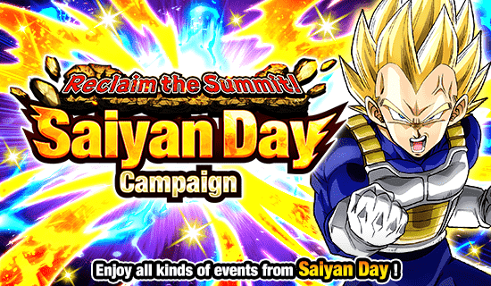
RAAAAHHHH EU AMO O DIA DOS SAIYAJINS
GRANDE celebração, escolha maravilhosa de card, bastante coisa pra fazer, o primeiro SUPER EZA na história do jogo, só coisa boa
^ Sumário (clique para ir a qualquer um dos tópicos)
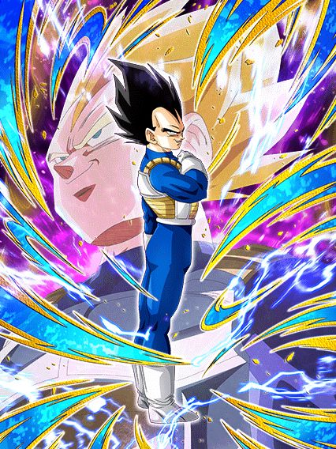
Gohan TEQ respawnou em outro card.
MEUS AMIGOS, que card incrível, ele é super parecido com o goku god do ano passado, mas melhor em certos aspectos (mas meu goat continua sendo ele)
Esse cara tem um buff de intro (apesar de não ter uma animação de entrada) que dura 3 turnos, onde ele lança um super adicional garantido e tem 18% de redução de dano
Sim, a redução é estupidamente baixa, mas não faz muita diferença ter ou não ter ela, o vegeta é um tank de qualquer jeito
Do mesmo jeito q o goku god, esse cara stacka ATK e DEF no super attack, então ele já tar lançando 2 garantidos no começo da luta vai ajudar bastante
E não acaba, já que ele ainda lança um adicional com 70% de chance de ser super caso tenha um goku no turno (não, não precisa ser um goku base, obrigado)
Bom, esse cara tem um requerimento levemente específico, que é estar com a vida cheia, já que ele ganha ATK e DEF multiplicativos dependendo de quanto HP vc tem, e acredite, é muito absurdo
O vegeta ganha a defesa assim que vc terminar de pegar os orbs no turno, então se vc olha a defesa dele antes do turno começar, vai parecer baixo, mas é um valor muito mais alto que parece
E aí tem a parte braba: esse cara tem defesa ativa infinita, sem condição nenhuma, do mesmo jeito q o gohan teq, o que torna os dois muito parecidos, já que vc pode fica stackando infinitamente com o vegeta se quiser, mas eu não recomendo, ele não precisa de tantos stacks assim
Minha recomendação é stackar nos turnos que ele tem o adicional garantido e transformar ele
Por sinal, meu Deus kkkkkk ele tem a condição mais fácil de todas pra transformar: estar acima de 18% de HP a partir do turno 3, praticamente impossível né
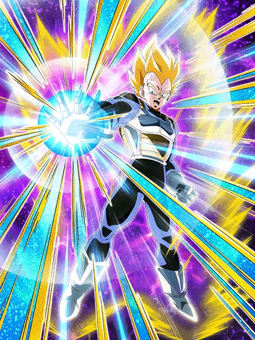
É bom que o inimigo comece a rezar.
O que você poderia considerar um "problema" do vegeta antes da transformação, q seria não dar muito dano (isso na verdade é ótimo pq ele stacka tranquilo), agora não é mais um problema.
O vegeta mantém a defesa ativa permanente, a redução de dano fica permanente também, e o buff de defesa que não dá pra ver aumentou também
E agora o vegeta vira uma máquina de dano, já que ele tem um adicional com 70% de ser super caso seu HP esteja acima de 30%, e juntamente com isso ainda lança um super adicional e quebra 1 ação do inimigo se ele levar um golpe antes de atacar
Sim, ele não stacka mais, mas ele ganha 50% de ATK e DEF por super feito, e como lançar 3 num turno é muito comum, esse cara tem uma defesa insana q a gente não consegue ver
E não basta só os múltiplos supers adicionais, além disso o vegeta tem uma mecânica de aumentar o próprio ATK dependendo de quanto HP o boss ainda tem
Esse buff se totaliza em 110% de ATK se o inimigo tiver 40% ou menos de HP, então é, com tantos supers e cada vez mais dano, fica fácil né?
Tem mais.
O vegeta tem uma active muito forte que torna todos os ataques dele críticos e ainda por cima dá um dano do caramba por causa dos stacks, além da condição fácil
Em resumo, o vegeta é um sucessor maravilhoso do goku god phy, o vegeta tem tudo q ele tinha de melhor e ainda tem mecânicas ainda mais fortes, tornando ele facilmente o melhor TUR do jogo
E por sinal, EU AMO as osts desse cara, é isso.
Rei Vegeta AGL
Eu julguei esse cara como mid e estava errado, mil perdões.
Esse cara é disparado o melhor suporte pra qualquer card Vegeta's Family, e pra isso vc só precisa de uma coisa: pegar 3 orbs.
O rei vegeta é um suporte orb changer, e eu admito que o orb change dele é horrível, já q ele só troca orbs PHY pra AGL e isso é horrível, mas tudo bem pq normalmente não precisam de tanto ki no time
Com 3 orbs pegos, ele ganha 18% de redução de dano, e caso sejam 3 orbs AGL, a redução aumenta pra 36%, o que é minimamente decente
O suporte dele é o básico: 30% de ATK e DEF e ele ainda dá 18% de chance de crítico pra personagem Vegeta's Family, que é muito bom pro vegeta teq
E aí é o seguinte, esse cara ganha alguns buffs a mais se tiver um vegeta no turno, e um desses buffs é aumentar o suporte dele de 30% pra 60%, o que é brabo, mas infelizmente o suporte só ativa DEPOIS de ele dar super.. pq?
Esse cara consegue tankar sim os supers brabos, ele tem uma defesa muito alta, mas pq vc jogaria ele no slot 1 ao invés do vegeta transformado que ganha um super adicional garantido e tudo?
Acho q é a única falha dele, mas tá tudo certo pq ele continua sendo um belo card que faz seu trabalho muito bem, até as animações do cara são boas
EZA do Trunks LR da SBR
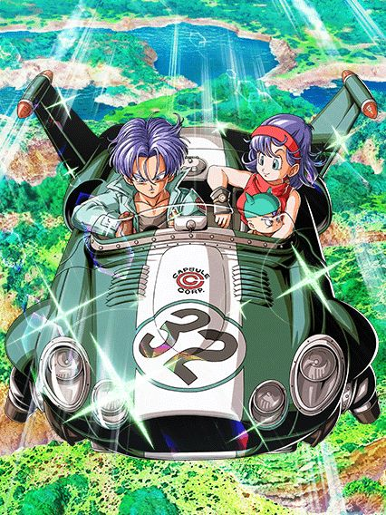
Ele é bom em slots específicos..??
Esse foi um Eza interessante, não é um card ruim mas ele tem especificações muito estranhas, tipo, ele é restrito a Vegeta's Family, óbvio, mas isso é de boa e ele ganha buffs muito fortes, incluindo 50% de chance de desviar
O fato é que o trunks precisa ou de outro trunks ou da bulma no time pra ter um pouco mais de ATK e DEF pq..??
É, tem a bulma no card mas.. pra q?
E ele também tem uma restrição de slot esquisita onde:
No slot 1 ele tem 100% de DEF a mais e dá 3 de Ki pra todo mundo
No slot 2 ele tem 50% de ATK e DEF e agora os 3 de Ki são só pra Vegeta's Family
E no slot 3 ele tem 100% de ATK e os 3 de Ki agora são só pra ele
Sei lá, ficar quebrando a passiva e o suporte do card dependendo do slot q vc tiver é bem paia, mas é um bom card, tem belas animações
O SUPER EZA DO GOKU SSJ 3 AGL
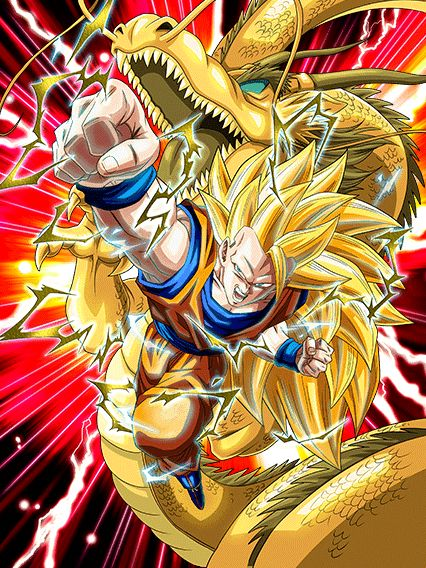
ESSE CARA
ESSE CARA TINHA 1 LINHA 1 LINHA DE PASSIVA
O goku é um deus nos primeiros 5 turnos dele, já que ele tem seus balanceados 500% DE ATK E DEF que não são nem um pouquinho absurdos né, acho até meio justo isso ir diminuindo
E se 500% de DEF não tankar, fique tranquilo, pq esse cara tem 60% de chance de desvio (antes de atacar 💀, infelizmente cai pra 30% depois) e quando desviar ganha mais 150% de DEF, oq obviamente é muito mais que o suficiente pra colocar esse cara em mais de 1 milhão de defesa com desvio, eu diria que é bem balancead-
Eu falei q esse cara dá crítico garantido no primeiro turno dele? Pois é, não tem como o boss evitar o super de 15 milhões crítico, boa sorte a ele
Por sinal ele ainda fica com 50% de chance de critar quando desviar, então não pense q vai ser só um turno nessa brincadeira..
Não só isso mas pra finalizar, ele tem aquele humilde 50% de chance de lançar um super adicional que podia ser melhor mas é melhor que nada, agradeço
Bom, o goku vai perdendo esses buffs e depois de 7 turnos ele tá zerado, vira um card desvia ou morre, então é, mais um card feito pra evento curto.. pelo menos ele cozinha demais né.
Falando sobre o Super Extreme Z-Awakening
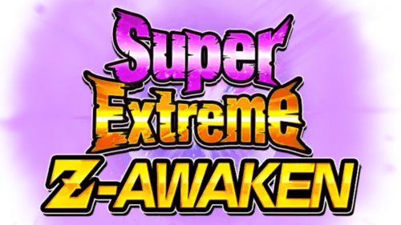
Quando anunciaram os Super EZAs, eu achei bem interessante pq seria uma oportunidade de trazer cards antigos de volta né? (nem preciso comentar de pessoas chamadas goku black int ou jiren)
Mas eu não achei que seria algo ASSIM, pq meu amigo, isso é absurdo
Chega até a ser engraçado, pq quando a gente ficou sabendo que SEZAs não iam mudar a leader skill ou o super attack, a gente ficou meio em dúvida, mas o goku ssj3 mostrou pq não mudaram
É a melhor oportunidade que eles tem de colocar personagens que nunca tiveram uma chance nem com eza no meta de novo, e ainda trazer alguns reis de volta
Acho que o hype com o Super EZA do Gogeta STR do primeiro aniversário seria muito absurdo, principalmente se ele for extremamente desbalanceado
Vamos torcer muito que personagens que eles zuaram com ezas no passado não sejam zuados novamente (estou confiando em você, goku black int daqui 7 anos)
Em geral, uma função muito bem implementada. só podia dar mais umas dragon stones né kkkj
os ezas do world tournament
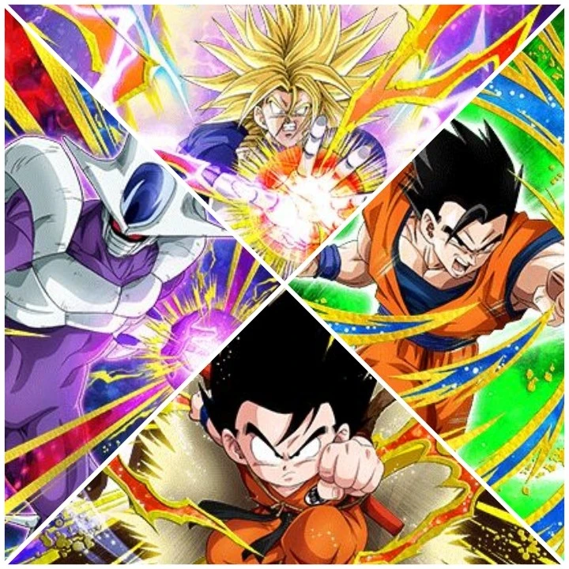
Isso não é mais um meme ou uma brincadeirinha, é um pedido de socorro.
Por favor, p a r e m .
Eu vou resumir pra você: TODOS eles são mid, ok? Pode passar pra outro tópico..
Se você quer continuar vendo meu sofrimento, então é, continue lendo 💀
O gokuzinho e o gohan místico tem um monte de ATK e DEF, sem nenhuma mecânica defensiva e eles ainda tem a audácia de buildar um pouquinho mais, como se fosse fazer diferença né
O gokuzinho pelo menos pode virar oozaru com sua incrível 10% de chance de transformar
E se você acha que as chances de 10% acabaram, está enganado, pois o incrível cooler agl tem não só 1, mas DOIS ataques adicionais com 10% de chance de serem supers, realmente o mais forte do universo
Pelo menos o cooler tem alguma coisa, já que ele builda atacando sem te obrigar a fazer supers, e tem 50% de chance de desvio se estiver buildado, boa sorte pra fazer isso
O super trunks é um card completamente RNG, 75% da passiva dele tem chances de ativar, incluindo incriveis 70% de chance de ter 150% de ATK e DEF.. preciso nem falar nada né?
É sério, eu entendo, poxa são cards gratuitos, mas precisava mesmo fazer eles tão medíocres assim?
Pilaf LR
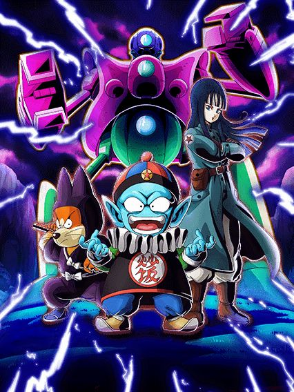
Realmente a salvação dos cards de world tournament é não ser um EZA, eu acho
Eu irei ser direto ao ponto, esse é um card que não tem restrições no kit mas as categorias infelizmente forçam eles a serem usados em DB Saga e nada mais, oq já é um probleminha né
Mas olha, eu acho esse card maneiro pq ele tem muito RGN envolvido, mas de um jeito mais divertido
Basicamente esses caras tem uma intro que dura 5 turnos, e nesses 5 turnos eles vão mudar orbs PHY pra AGL, STR ou TEQ aleatoriamente, e dependendo da orb q vc pegar, eles ganham buffs diferentes
Orbs STR fazem eles terem uma ofensiva melhor, ganhando 100% de ATK e 50% de chance de critar
Orbs TEQ fazem eles mais defensivos, dando 100% de DEF e 50% de chance de desvio
E orbs AGL são meio q um balanceamento dos 2, dando 70% de ATK e DEF e um adicional com 50% de chance de ser um super attack
Esse orb change acontece também se tiver um inimigo goku mas aí é específico demais né
Em geral um cardzinho bem divertido, não necessariamente forte mas também não é horrível, é mais uma prova q os F2Ps de DB Saga não costumam errar
E por sinal.. MELHOR OST DO JOGO RAAAAAAHHHHH 🦅🦅
Certamente o ápice da trilha sonora.
O EZA do Super Vegeta STR
...pq botaram restrição no card que não tinha nenhuma?
Tipo, esse EZA é bom sim, mas ao mesmo tempo ele não é, sei lá
No global ele ainda tá tranquilo, nada realmente destrói ele, mas no jp a história é outra, esse cara tem 5 turnos de defesa ativa e como os eventos lá voltaram a ser mais longos, ele n vai tankar lá não
Pelo menos com essa defesa ativa ele consegue tankar ataques antes de dar super, ganhando o buff de dano dele mais fácil doq antigamente, além de ele buildar ATK e DEF com 2 supers, então nesses 5 turnos ele é bom sim
Mas só serem esses 5 turnos é o problema, o vegeta dá MUITO DANO, sim, crítico garantido, tudo brabo, supers de 15 milhões e etc, mas doq adianta tudo isso se ele não vai tankar os ataques básicos de 1 milhão de dano?
E aí que tá o outro problema, o vegeta ter um super adicional garantido, mais ATK e DEF, defesa ativa permanente e tudo mais.. contra um INIMIGO CELL
MALDITO SUPER TRUNKS, amaldiçoando outros cards com isso
Acho que isso resume bem o super vegeta, ele dá bastante dano mas depois que a defesa ativa acabar, ele vira farofa
Uma coisa é que esse cara no turno da active é hilário, 30 milhões de dano crítico garantido, isso se ele não der um adicional né kkkkk
E outra coisa que já ficou óbvia né: a Kefla STR foi uma anomalia e jamais vamos ver outro EZA assim.
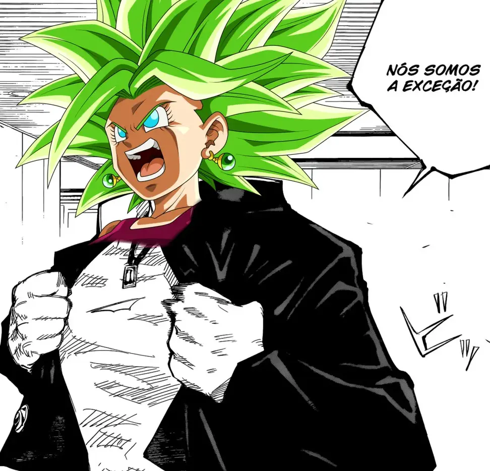
(Será que já tem jjk suficiente no site?)
EZA do Super Vegeta AGL
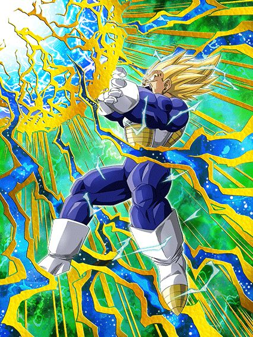
Se ele é bom só quando vc tá praticamente sem HP, ele é realmente bom?
Esse cara real só funciona se vc tiver pouca vida, se vc não estiver com tipo, 10% de HP, ele não tem passiva
O que esse cara tem é um suporte pra todo mundo de 25% de ATK e DEF que é muito bom, e o suporte ainda aumenta pra 50% se for pra um aliado AGL, STR ou PHY
Os stats desse cara são baixos, a defesa dele é ruim, o dano dele é bem mediano, mas ele por algum motivo vira um deus se vc estiver a beira da morte
Se vc estiver com menos de 30% de HP no turno, o vegeta dá crítico garantido e tem 90% de redução de dano
A gente sabe que redução de dano alta assim tanka qualquer coisa por causa do golden freeza AGL antigão, mas o fato é que o vegeta tem stats mais altos que ele então é, ele realmente fica invencível, e isso tudo é permanente, enquanto vc estiver abaixo de 30% de HP, esse cara é um tank suporte absurdo, o problema é que isso machuca o resto do time inteiro né
Eu não diria que ele é ruim, mas como tentar manter ele com a redução faz o time inteiro correr risco de morte pra qualquer coisa, é bem justo dizer que ele podia ser um pouco melhor né
EZA do Cell Jr.
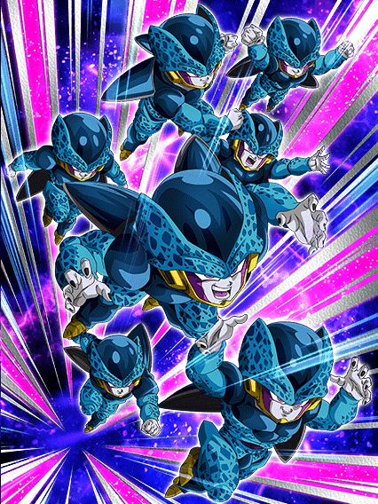
Eles vão ser úteis no futuro.
Esses caras precisam de um time completo Artificial Life Forms, que vai ser necessário pra uma missão do gohan beast lá no aniversário, então eles já tem um valor que talvez não se mostre agora, mas sim futuramente
Com o time completo, eles tem 360% de ATK e DEF e 70% de chance de desviar que é algo já muito aceitável, além de eles serem suportes de 30% de ATK e DEF pra categoria também
Eles também tem um adicional com 50% de chance de ser super sem nenhuma condição que é ótimo
Ponto, essa é a passiva deles, pq oq vem depois é complicado..
Super adicional garantido e orb change, mas só quando tiver um Cell perfeito ou super perfeito no time, preciso nem dizer que isso não existe né
Bom, tem o Cell INT LR mas ele segue com o problema de correr muitos riscos antes de ele se transformar, e infelizmente ele já não é mais o deus que era antes, triste
Mas esses caras são bons sem ele, e isso é ótimo.
O EZA DO ANDROID 16 INT
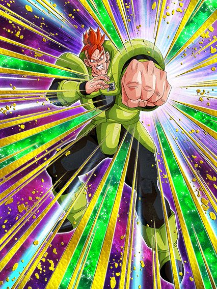
Se vc tava afim de ver uma coisa inesperada, vc encontrou.
Alguém esqueceu a churrasqueira ligada e tirou esse card no ponto certo, mlk, eles cozinharam tudo
O 16 é um dos melhores tanks do jogo gratuitamente, ele basicamente não tem condições no kit
O cara tem defesa ativa permanente sem nenhuma condição, builda 48% de redução de dano simplesmente tendo ataques direcionados a ele (ou seja, não importa se ele levar um ataque ou desviar, conta pra build de qualquer jeito) e ainda por cima tem 50% de chance de critar depois de levar 1 simples golpe, tipo.. como assim???
Esse cara tá andando por aí com defesa ativa, quase 50% de redução de dano e stats bons de graça praticamente, tem gente usando ele sem leader skill oq é insano
Por sinal esse cara consegue tankar supers de milhões de dano estando em desvantagem de tipo ainda
Mas aí vem a melhor parte.. depois de anos, o 16 finalmente pode ser usado no mesmo time q o Gohan AGL sem ser um time zuado, graças ao goku descalço do torneio
Esse 16 tá em Powerful Comeback, e o gohan em Earth-Bred Fighters, os dois entram na leader skill e isso torna ambos mais fortes
Se tiver um gohan ssj ou ssj2 no turno, o 16 ganha mais ATK, mais DEF, e ainda vira um suporte de 58% de ATK e DEF pra todo mundo
E é bem óbvio que o 16 estar presente no time faz o gohan poder se transformar a praticamente qualquer hora, assim facilitando ainda mais a ver a transformação linda dele
É meio irônico esse 16 ser absurdo, pq no lançamento dele, ele não ajudava o gohan agl em nada e era inútil em geral, realmente é uma nova era do dokkan..
Você chegou ao fim dessa página!
Obrigado por ler tudo, e fica a vontade pra ver outras